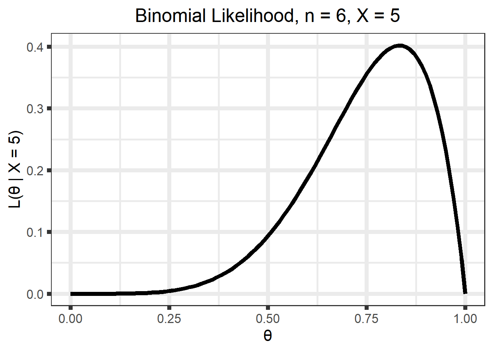
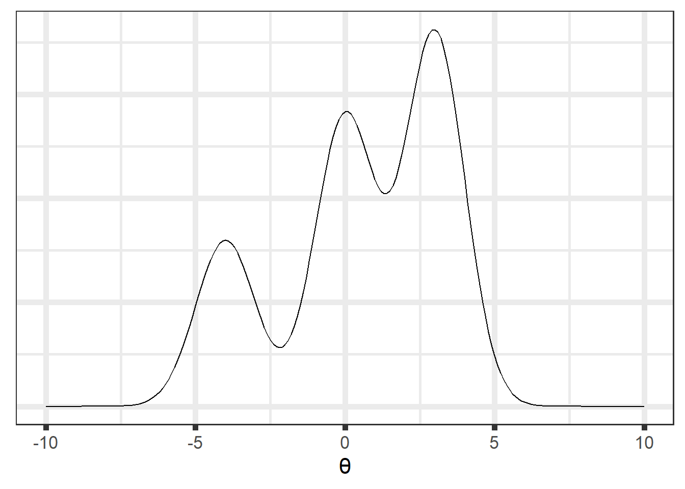
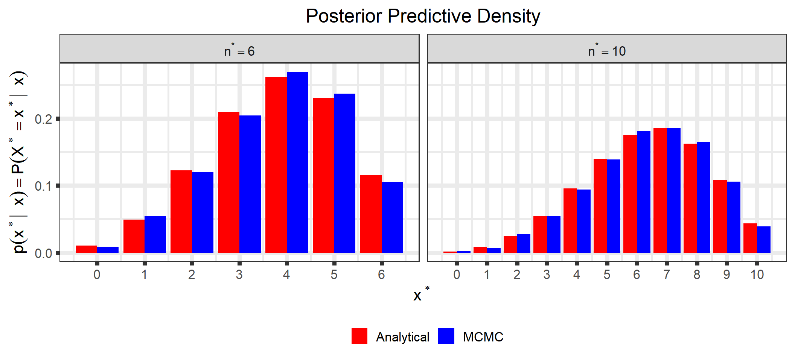

This document is is meant to introduce you to the most basic elements of Bayesian inference. It is in no way comprehensive, but it will hopefully give you a platform of understanding so that you can get as much as possible out of this tutorial.
Here are a few references that we’ve found useful in our Bayesian lives:
In any experiment, survey, observational study, or clinical trial, we are using sample data to try to answer some question(s) about the population of interest.
We collect (sample) data\(\left(X\right)\) to estimate parameters\(\left(\theta\right)\) and perform some sort of inference (point estimation, confidence intervals, hypothesis tests, ) to say something/make decisions about the “population.”
However, learning from the data is complicated by the natural variability of the measurements, so we can’t find the “correct” values of the parameters.
We want to quantify our knowledge/uncertainty about the parameters with point estimates, i.e., “typical” values, and uncertainty estimates such as standard errors, CV%, and confidence intervals.
After collecting \(n = 6\) data points where \(x = 5\) people liked it, we want to make inferences about the population parameter \(\theta\), the proportion of people in the population that likes Mt. Dew Cheesecake.
1.2.1.2 Example 2
After collecting \(n = 60\) data points where \(x = 50\) people liked it, we want to make inferences about the population parameter \(\theta\)
1.3 Frequentist/Likelihoodist Approach
The most common methods for parameter estimation in non-Bayesian paradigms involve some sort of optimization. For this problem, we’ll use maximum likelihood, 1 where we find the value of \(\theta\) that maximizes the likelihood2, or, in other words, we find the value of \(\theta\) that maximizes the probability of observing the data that we have observed.
In the above example, we assume the data has a binomial distribution with \(n\) trials and probability of success, \(\theta\), i.e. \(X \sim Bin(n,\theta)\). Then we can write out the density3\(f(x \;| \; \theta)\), the probability that we would would observe \(x\) “successes” out of \(n\) trials for a given value of \(\theta\) for any value of \(x \in \{0, 1, 2, \ldots, n\}\) and \(0 \leq \theta \leq 1\): \[ \begin{align}
f(x | \theta) &= P(X = x \;| \;\theta) \\
&= {n \choose x}\theta^x(1 - \theta)^{n-x},
\;\; x = 0, \; 1, \; 2, \;\ldots, \; n
\end{align}\]
For Example 1 above with \(n = 6\), for \(\theta\) values of 0.4 and 0.75, the density of \(X\) looks like this:
But we want to maximize the likelihood function, \(\mathcal{L}(\theta \; | \; x)\). Luckily for us, it is the same as the density, but is a function of \(\theta\) for a given \(x\), instead of \(X\) for a given \(\theta\). That is, \(\mathcal{L}(\theta \; | \; x) = f(x \;| \; \theta)\). For Example 1 with \(n = 6\) and \(x = 5\) the likelihood is as below \[\begin{align}
\mathcal{L}(\theta \; | \; x) &= {n \choose x}\theta^x(1 - \theta)^{n-x} \\
&= {6 \choose 5}\theta^5(1 - \theta)^{6 - 5}, \;\; 0 \leq \theta \leq 1
\end{align}\]
Code
n_1 <-6x_1 <-5(binom_like_plot_1 <-tibble(theta =seq(0, 1, by =0.01)) %>%mutate(likelihood =dbinom(x_1, n_1, prob = theta)) %>%ggplot(aes(x = theta, y = likelihood)) +geom_line(size =2) +ylab(str_c("L(\U03B8 | X = ", x_1, ")")) +xlab("\U03B8") +ggtitle(str_c("Binomial Likelihood, n = ", n_1, ", X = ", x_1)) +theme(plot.title =element_text(hjust =0.5),plot.subtitle =element_text(hjust =0.5)))

Figure 1.2: Binomial likelihood.
The maximum likelihood estimate (MLE), \(\hat\theta\), is the value of \(\theta\) that maximizes this function. That is, \[\hat\theta = \underset{\theta}{\mathrm{argmax}} \;
\mathcal{L}(\theta \; | \; x)\]
Intuitively, it is the value of \(\theta\) that is “most likely” given the observed data. For example, in our example it doesn’t seem likely that we would observe our data if \(\theta = 0.25\), but it seems more likely that we could observe this data if \(\theta = 0.8\) or so.
We also want to quantify the uncertainty of this estimate, typically with a standard error. A larger standard error means we are more uncertain about our estimate than a smaller standard error, and in a sense, the standard error is a measure of the “pointiness” of the likelihood. The (asymptotic) standard error can be calculated as the square root of the diagonals of the inverse of the Fisher information matrix evaluated at the MLE (the observed Fisher information. See here for a more thorough discussion of MLEs, Fisher information, and the form when \(\theta\) is a vector). An intuitive explanation of the relationship of the standard errors to the Fisher information matrix is that the standard error is a measure of the curvature of the likelihood. Roughly, more information in the data \(\implies\) large negative values in the observed Fisher information matrix (more curvature) \(\implies\) smaller values after inversion to get the variance.
This particular example has a simple, closed-form solution, but most of our problems in the PK/PD world require a numerical optimization, typically by some gradient-based method. So for our example, we can do this numerical optimization in R
Code
x_1 <-5n_2 <-6x_2 <-50n_2 <-60example_mle_1 <-optim(par =0.3, fn =function(theta, n, x) -dbinom(x, n, theta, log =TRUE), n = n_1, x = x_1, method ="Brent", hessian =TRUE, lower =0, upper =1)example_mle_2 <-optim(par =0.3, fn =function(theta, n, x) -dbinom(x, n, theta, log =TRUE), n = n_2, x = x_2, method ="Brent", hessian =TRUE, lower =0, upper =1)tribble(~Example, ~MLE, ~SE,1, example_mle_1$par, sqrt(1/as.double(example_mle_1$hessian)),2, example_mle_2$par, sqrt(1/as.double(example_mle_2$hessian))) %>% knitr::kable(format ="html", digits =3, align ="c",caption ="Numerical MLE") %>% kableExtra::kable_styling(bootstrap_options ="striped", full_width =FALSE,position ="center")
Classical methods treat the parameter(s) as fixed and the data random and then find a point estimate and standard error using only information from the data4. In contrast, Bayesian methods treat the parameter(s) as a random variable and consider the data fixed and then make inferences based on a proper distribution. These methods initially allocate probability to all possible parameter values via a prior distribution and then reallocate probability when new information is gained. Bayesian inference depends on our ability to quantify the posterior distribution of the parameters conditioned on the data. This posterior distribution contains all of our knowledge about \(\theta\) (prior knowledge and knowledge obtained from the data).
1.4.1 Bayes’ Theorem
The form of the posterior distribution follows from Bayes’ Theorem5: \[\begin{align}
\color{blue}{p\left( \theta | x\right)} &=
\frac{p(x, \theta)}{\color{red}{f\left( x \right)}} \notag \\
&= \frac{\color{green}{f\left( x | \theta\right)}\color{orange}{p\left( \theta
\right)}}{\color{red}{f\left( x \right)}} \notag \\
&= \frac{\color{green}{f\left( x | \theta\right)}\color{orange}{p\left( \theta
\right)}}{\color{red}{\int \limits_{\Theta}f\left( x | \theta\right)
p\left( \theta \right) \mathrm{d}\theta}}
\end{align} \tag{1.1}\]
1.4.1.1 Prior Distribution
We begin with the prior distribution to quantify our knowledge/beliefs about \(\theta\) before we collect data. For our examples, we might assume
a “noninformative” prior distribution6 and use a \(Uniform(0, 1)\) (equivalent to a \(Beta(1,1)\)7 distribution for \(p(\theta)\)). This is a simple way to express our ignorance about \(\theta\).
an informative prior that expresses our belief that most people will not like Mt. Dew Cheesecake. We might quantify this with a \(Beta(2, 3)\) distribution.
The likelihood is the same (see Figure 1.2) as we had when we were using optimization methods (recall that \(\mathcal{L}(\theta \; | \; x) = f(x \;| \; \theta)\)).
One thing to notice for each of these likelihoods is that they do not integrate to 18, one of the requirements for a function to be a probability distribution. However, the likelihood can be normalized to integrate to 1 by multiplying by a constant. This will be touched upon again in the section on marginal distributions and in Appendix A, and all future plots will plot a scaled likelihood for visual purposes.
Code
like_binom <-function(theta, n, x) dbinom(x, n, theta)integral_1 <-integrate(like_binom, n = n_1, x = x_1, lower =0, upper =1)$valueintegral_2 <-integrate(like_binom, n = n_2, x = x_2, lower =0, upper =1)$valuetribble(~Example, ~Integral,"1", integral_1,"2", integral_2) %>% knitr::kable(format ="html", digits =3, align ="c",caption ="Likelihood Integrals") %>% kableExtra::kable_styling(bootstrap_options ="striped", full_width =FALSE,position ="center")
Table 1.1: Likelihood Integrals
Example
Integral
1
0.143
2
0.016
Regardless, the likelihood is a key part of Bayes’ Theorem and contains the information about \(\theta\) obtained from the data.
1.4.1.3 Marginal Distribution
Consider the case where \(X\) has the sampling density \(f(x \;|\; \theta)\) and \(\theta\) is a random variable with density \(p(\theta)\). Then the joint density of \(X\) and \(\theta\) is \[f(x, \; \theta) = f(x \;|\; \theta) \; p(\theta),\] which you will recognize as the numerator in Equation 1.1. The marginal distribution9 of \(X\) is then \[\begin{align}
f(x) &= \int \limits_{\Theta}f(x, \; \theta) \; \mathrm{d}\theta \notag \\
&= \int \limits_{\Theta}f\left( x | \theta\right) p\left( \theta \right)
\mathrm{d}\theta
\end{align} \tag{1.2}\]
That is, the marginal density of \(X\) is equal to the conditional sampling density of \(X\) averaged over all possible values of \(\theta\). It can also be thought of as a description of the predictions we would make for \(X\) given only our prior knowledge, which is why this is sometimes called the “prior predictive distribution”10. See Appendix A for more discussion on the marginal distribution.
In practice, the marginal distribution is often analytically intractable, and it is often just cast aside so that we have the posterior distribution up to a constant: \[\begin{align}
\color{blue}{p( \theta \; | \; x)} &=
\frac{\color{green}{f( x \; | \; \theta)}\; \color{orange}{p( \theta )}}
{\color{red}{f\left( x \right)}} \notag \\
&\propto \color{green}{f( x \; | \; \theta)}\; \color{orange}{p( \theta )}
\end{align} \tag{1.3}\]
This inability to find a closed-form for the marginal distribution is not a problem. Modern computational methods such as Markov Chain Monte Carlo (MCMC) allow us to sample from the posterior in such a way that the sample represents the true posterior distribution arbitrarily closely, and we can perform our inference based on this sample.
1.4.1.4 Posterior Distribution
The posterior distribution (See Appendix B for a derivation of the posterior for our examples) is the key to all Bayesian inference. It combines the prior distribution and the likelihood and contains all of the available information about \(\theta\) (prior knowledge and information obtained from the data):
We can also look at the posterior predictive distribution (See Appendix C for a derivation of the posterior predictive distribution for our examples). This is the distribution of possible unobserved values conditional on our observed values. For example, we could look at the density for a future observation, \(x^*\), for different future values of \(n, n^*\).
As mentioned in the section on marginal distributions, we often have an analytically intractable marginal distribution, which means we cannot get a closed-form solution for the posterior distribution11. Markov Chain Monte Carlo (MCMC) methods allow us to sample from the posterior distribution, and we can perform our inference based on numerical integration of the sample, rather than analytical integration when the closed-form is known.
Traditional Monte Carlo methods include the Gibbs sampler and Metropolis-Hastings. These methods are fast and easy-to-implement, but often lead to inefficient sampling from the posterior. Stan12 implements a more modern method called the No U-Turn Sampler (NUTS) that is itself an extension of Hamiltonian Monte Carlo. While more computationally intensive than Gibbs sampling or Metropolis-Hastings, it samples more efficiently from the posterior than those more traditional methods.
1.5.1 MCMC - An Illustration
Let’s assume we know the posterior density up to a constant, as in Equation 1.3):

Since we don’t have the marginal distribution, we can’t analytically integrate our posterior, but we can sample from it using MCMC methods:
In practice we use multiple chains to sample from the target distribution:
Our examples are very simple and have a simple closed form for the posterior distribution (see Appendix B) and posterior predictive distribution (see Appendix C). But let’s imagine the marginal distribution was intractable, and we weren’t able to find the closed form for the posterior. We’ll write the model in Stan and then sample from the posterior.
Code
data{int<lower = 0> x; // observed positive responsesint<lower = x> n; // number of responsesreal<lower = 0> alpha; // Value of alpha for the prior distributionreal<lower = 0> beta; // Value of beta for the prior distributionint n_new; // length of new n values you want to simulate for array[n_new] int n_star; // Number of future respondents for posterior predictions}parameters{real<lower = 0, upper = 1> theta;}model{// Priors theta ~ beta(alpha, beta);// Likelihood x ~ binomial(n, theta);}generated quantities{array[n_new] int x_star = binomial_rng(n_star, theta); }
d1 <-ggplot_build(p_sample_ppd)$data[[1]] %>%mutate(type ="MCMC")d2 <-ggplot_build(p_analytical_ppd)$data[[1]] %>%mutate(type ="Analytical")bind_rows(d1, d2) %>%select(x, y, type) %>%mutate(n_star =rep(c(rep(n_star[1], times = n_star[1] +1),rep(n_star[2], times = n_star[2] +1)), times =2)) %>%ggplot() +geom_bar(aes(x = x, y = y, group = type, fill = type),stat ="identity", position ="dodge") +scale_x_continuous(name = latex2exp::TeX("$x^*$"),breaks =0:max(n_star),labels =0:max(n_star)) +scale_fill_manual(name =NULL,breaks =c("Analytical", "MCMC"),values =c("red", "blue")) +ylab(latex2exp::TeX("$p(x^* | \\; x) = P(X^*= x^* | \\; x)")) +ggtitle("Posterior Predictive Density") +theme(plot.title =element_text(hjust =0.5),legend.position ="bottom") +facet_wrap(~n_star, scales ="free_x", labeller =label_bquote(n^"*"== .(n_star)))

You can see that all posterior quantities are similar between the analytical solutions and those estimated through MCMC.
1.6 Summary/tl;dr
Classical methods find point estimates through optimization of some objective function (often some function of the likelihood) and quantify uncertainty by examining the curvature of the likelihood at the point estimate.
Bayesian methods quantify our knowledge about the parameter(s) with a distribution. From this distribution, we can obtain point estimates, uncertainty estimates, and make predictions for future data.
The posterior distribution is a combination of our prior distribution and the data and contains all of our knowledge about the parameter(s).
The likelihood contains all of the information from the data.
The use of the prior distribution can range from being a nuisance that serves simply as a catalyst that allows us to express uncertainty via Bayes’theorem to a means to stabilize the sampling algorithm to actually incorporating knowledge about the parameter(s) before collecting data.
We often can’t get the posterior distribution in closed-form, but we can generally use Markov Chain Monte Carlo methods to obtain a sample that approximates the posterior.
Stan is a great tool for performing the MCMC sampling.
1.7 Appendices
1.7.1 Appendix A - More on the Marginal Distribution
While the marginal distribution is often analytically intractable, there are some cases where we can find the closed form. For our examples, we have assumed \[\begin{align}
X|\theta &\sim Binomial(n, \; \theta) \\
\theta &\sim Beta(\alpha, \; \beta)
\end{align}\] Then \[\begin{align}
f(x) &= \int \limits_{\Theta} p\left( x, \; \theta \right) \; \mathrm{d}\theta \\
&= \int \limits_{\Theta}f\left( x | \theta\right) p\left( \theta \right) \;
\mathrm{d}\theta \notag \\
&= \int_0^1 {n \choose x}\theta^x(1 - \theta)^{n-x}
\frac{\Gamma(\alpha + \beta)}{\Gamma(\alpha)\Gamma(\beta)}
\theta^{\alpha - 1}(1 - \theta)^{\beta - 1} \; \mathrm{d}\theta \notag \\
&= {n \choose x} \frac{\Gamma(\alpha + \beta)}{\Gamma(\alpha) \; \Gamma(\beta)}
\frac{\Gamma(\alpha + x) \;
\Gamma(\beta + n - x)}{\Gamma(\alpha + \beta + n)} \notag \\
&= {n \choose x} \frac{B(\alpha + x, \; \beta + n - x)}{B(\alpha, \; \beta)},
\; x \in \{0, 1, \ldots, n\}, \;\;\; \alpha, \; \beta > 0
\end{align} \tag{1.4}\] a beta-binomial distribution14.
If we assume the prior distribution \(\theta \sim Beta(1, 1)\) to express our ignorance of \(\theta\), then Equation 1.4 evaluates to \[f(x) = \frac{1}{n+1}, \; x = 0, 1, \ldots, n\] the density for a discrete uniform.
If we assume the prior distribution \(\theta \sim Beta(2, 3)\) to express our prior knowledge of \(\theta\), then \[\begin{align}
f(x) &= \frac{n!}{x!\;(n-x)!}\;\frac{4!}{1!\;2!} \;
\frac{(x+1)! \; (n-x+2)!}{(n+4)!}, \;\; x = 0, 1, \ldots, n
\end{align}\]
These two marginal distributions look like this (for Example 1 with \(n = 6\)):
Stopping to think about this, these plots make sense: if we have no knowledge of \(\theta\) (recall that a \(Beta(1,1)\) distribution is “noninformative”), then any value of \(x\) should be no more or less likely than any other possible value of \(x\) conditional on our current knowledge of \(\theta\). If we have some idea of \(\theta\) (a \(Beta(2, 3)\) describes our belief that it is likely that \(\theta < 0.5\), see Figure 1.3), then we would also expect the marginal distribution of \(X\) to be skewed towards lower values, as seen above.
Having integrated \(\theta\) out of the joint distribution of \(X\) and \(\theta\), we can see that the marginal distribution is a constant in \(\theta\). This constant is exactly the value needed to normalize the numerator in Equation 1.1, making the posterior distribution a true distribution.
For example, if \(\theta \sim Beta(1,1)\), then \(p(\theta) = 1, \; 0 \leq \theta \leq 1\). So the numerator in Equation 1.1 is \[\begin{align}
f(x \; | \; \theta)\;p(\theta) &= f(x \;| \; \theta) \times 1 \\
&= f(x \; | \; \theta) \\
&= \mathcal{L}(\theta \; | \; x)
\end{align}\] and we have already integrated our likelihoods for Examples 1 and 2 in Table 1.1. If we divide the values in this table by \(f(x) = \frac{1}{n+1}\) for the corresponding \(n\), we get exactly 1 for both, i.e., we normalized the numerator, and so the posterior distribution is now a true distribution15.
1.7.2 Appendix B - Derivation of the Posterior in Our Examples
For our examples, we have assumed \[\begin{align}
X|\theta &\sim Binomial(n, \; \theta) \\
\theta &\sim Beta(\alpha, \; \beta)
\end{align}\] Then \[\begin{align}
p( \theta \; | \; x) &=
\frac{f( x \; | \; \theta)\; p( \theta )}{f\left( x \right)} \notag \\
&\propto f( x \; | \; \theta)\; p( \theta ) \notag \\
&= {n \choose x}\theta^x(1 - \theta)^{n-x} \;
\frac{\Gamma(\alpha + \beta)}{\Gamma(\alpha)\;\Gamma(\beta)} \;
\theta^{\alpha - 1}\;(1-\theta)^{\beta - 1} \notag \\
&\propto \theta^{\alpha + x - 1}\;(1 - \theta)^{\beta + n - x - 1} \notag \\
&\implies \theta\;|\;x \sim Beta(\alpha + x, \; \beta + n - x)
\end{align}\]
1.7.3 Appendix C - Derivation of the Posterior Predictive Distribution in Our Examples
In Appendix B we derived the posterior distribution of \(\theta\). Here we will derive the posterior predictive distribution used for posterior predictive checking and to simulate/predict future data.
After collecting \(x\) positive responses out of \(n\) respondents, we want the density for the number of positive responses, \(x^*\), out of \(n^*\) future respondents: \[\begin{align}
f(x^* | x) &= \int \limits_{\Theta} p\left( x^*, \; \theta | x \right) \;
\mathrm{d}\theta \notag \\
&= \int \limits_{\Theta}f\left( x^* | \theta, x \right)
p\left( \theta | x \right) \; \mathrm{d}\theta \notag \\
&= \int \limits_{\Theta}f\left( x^* | \theta \right)
p\left( \theta | x \right) \; \mathrm{d}\theta \\
&= \int_0^1 {n^* \choose x^*}\theta^{x^*}(1 - \theta)^{n^* - x^*}
\frac{\Gamma(\alpha + \beta + n)}{\Gamma(\alpha + x)\Gamma(\beta + n - x)}
\theta^{\alpha + x - 1}(1 - \theta)^{\beta + n - x - 1} \;
\mathrm{d}\theta \notag \\
&= {n^* \choose x^*} \frac{\Gamma(\alpha + \beta + n)}{\Gamma(\alpha + x) \; \Gamma(\beta + n - x)}
\frac{\Gamma(\alpha + x + x^*) \;
\Gamma(\beta + n - x + n^* - x^*)}{\Gamma(\alpha + \beta + n + n^*)} \notag \\
&= {n^* \choose x^*}
\frac{B(\alpha + x + x^*, \; \beta + n - x + n^* - x^*)}{B(\alpha + x, \; \beta + n - x)},
\; x^* \in \{0, 1, \ldots, n^*\}
\end{align}\] another beta-binomial distribution.
You can see that this is similar to Equation 1.2 in that it shows the posterior predictive distribution as an average of conditional predictions over the posterior distribution of \(\theta\). That is, it is equal to the conditional sampling density of \(X^*\)averaged over all possible values of \(\theta\) conditioned on our data.
You might see least squares, AIC, BIC, or -2 LL, but the idea is the same.↩︎
The likelihood contains all the information contained in the data↩︎
This might be called a “probability mass function” for discrete \(x\), a “probability density function” for continuous \(x\) or as a generic term, or simply the “density”, and the reader should know from context what is meant.↩︎
You can argue that regularization methods like ridge regression and lasso incorporate prior information with the constraint parameter (\(\lambda\)). Most people don’t think of the constraint as prior information, but there is a direct Bayesian analogue (with maximum a posteriori (MAP) estimation) to (many) regularization methods.↩︎
The integral is used generally. If the parameter space of \(\theta\) is discrete, this will be a summation, and if \(\theta\) is a vector, then there will be multiple integrals (and/or summations)↩︎
For \(X \sim Beta(\alpha, \beta)\), \[\begin{align}
f(x) &= \frac{\Gamma(\alpha + \beta)}{\Gamma(\alpha)\;\Gamma(\beta)} \;
x^{\alpha - 1}\;(1-x)^{\beta - 1} \\
&= \frac{1}{B(\alpha, \beta)}\;x^{\alpha - 1}\;(1-x)^{\beta - 1},
\; 0 \leq x \leq 1, \;\;\; \alpha, \; \beta > 0
\end{align}\] where \(\Gamma(\cdot)\) is the Gamma function and \(B(\cdot, \cdot)\) is the Beta function↩︎
They do integrate to 1 with respect to \(x\) (see Figure 1.1), but they do not with respect to \(\theta\), which is why they are not true probability distributions for \(\theta\)↩︎
It should be noted that the marginal distribution is technically dependent on the hyperparameters, e.g., for our examples with hyperpriors \(\alpha\) and \(\beta\) in \(p(\theta)\), \(f(x)\) is technically \(f_{\alpha, \beta}(x)\), but the dependence on the hyperparameters is understood.↩︎
We will talk about this later when we go into setting priors for complex problems↩︎
Our examples here have been simple and used conjugate priors, so we have been able to find a closed-form solution for the posterior. This is rarely the case in our real-life problems in the PK/PD world.↩︎
Python also has a NUTS implementation in the PyMC package. Julia has a NUTS implementation in the Turing package, NONMEM also can sample from the posterior using either M-H and Gibbs with the BAYES method or using NUTS with the NUTS method.↩︎
With \(n^* = 6 = n\), we are also doing a posterior predictive check (PPC). The idea of PPC is that if a model is a good fit, then we should be able to use it to generate data that looks a lot like the data we observed.↩︎
The beta-binomial distribution is similar to the binomial distribution in that it gives the probability of observing \(x\) successes in \(n\) trials. However, while the binomial distribution considers \(\theta\) fixed and known, the beta-binomial distribution assumes \(\theta\) is either unknown or random and incorporates this uncertainty in \(\theta\) by treating \(\theta\) as a draw from a Beta distribution. This uncertainty in \(\theta\) has the effect of giving the beta-binomial a slightly larger variance than the binomial↩︎
The lack of normalization is why frequentist inference can’t talk about the likelihood as a distribution↩︎
Source Code
---title: "Introduction to Bayesian Methods for Inference"format: html: code-fold: true code-summary: "Code" code-tools: true number-sections: true toc-depth: 5---```{r setup, include=FALSE, echo=FALSE}knitr::opts_chunk$set(eval =TRUE, echo =TRUE, message =FALSE, warning =FALSE, include =TRUE)def.chunk.hook <- knitr::knit_hooks$get("chunk")knitr::knit_hooks$set(chunk =function(x, options) { x <-def.chunk.hook(x, options)ifelse(options$size !="normalsize", paste0("\\", options$size,"\n\n", x, "\n\n\\normalsize"), x)})RNGkind(sample.kind ="Rounding")cat("<style>caption { color: black; font-weight: bold; font-size: 1.25em; align: center; }</style>")``````{r package-load, include=TRUE, message=FALSE, warning=FALSE}# library(collapsibleTree)library(kableExtra)library(patchwork)library(plotly)library(latex2exp)library(magick)library(gganimate)library(bayesplot)library(tidybayes)library(loo)library(posterior)library(cmdstanr)library(tidyverse)theme_set(theme_bw(base_size =16, base_line_size =2))register_knitr_engine()```## IntroductionThis document is is meant to introduce you to the most basic elements of Bayesian inference. It is in no way comprehensive, but it will hopefully give you a platform of understanding so that you can get as much as possible out of this tutorial.Here are a few references that we've found useful in our Bayesian lives:- [Bayesian Data Analysis](http://www.stat.columbia.edu/~gelman/book/)- [Statistical Rethinking](https://xcelab.net/rm/statistical-rethinking/)- [Regression and Other Stories](https://avehtari.github.io/ROS-Examples/index.html)- [Jose Storopoli's](https://storopoli.io/) slides on [Bayesian Statistics](https://github.com/storopoli/Bayesian-Statistics)- [Stan Discourse](https://discourse.mc-stan.org/)## Statistical Inference- In any experiment, survey, observational study, or clinical trial, we are using sample data to try to answer some question(s) about the population of interest.- We collect (sample) *data* $\left(X\right)$ to estimate *parameters* $\left(\theta\right)$ and perform some sort of inference (point estimation, confidence intervals, hypothesis tests, \ldots) to say something/make decisions about the "population."- However, learning from the data is complicated by the natural variability of the measurements, so we can't find the "correct" values of the parameters.- We want to quantify our knowledge/uncertainty about the parameters with point estimates, i.e., "typical" values, and uncertainty estimates such as standard errors, CV%, and confidence intervals.### Motivating ExamplesWe want to estimate the proportion of the population that likes [Mountain Dew Cheesecake](https://www.tastemade.com/shows/the-scran-line/mountain-dew-cheesecake).\vspace{0.25 in}<center>{width="250px"}</center>#### Example 1After collecting $n = 6$ data points where $x = 5$ people liked it, we want to make inferences about the population parameter $\theta$, the proportion of people in the population that likes Mt. Dew Cheesecake.#### Example 2After collecting $n = 60$ data points where $x = 50$ people liked it, we want to make inferences about the population parameter $\theta$## Frequentist/Likelihoodist ApproachThe most common methods for parameter estimation in non-Bayesian paradigms involve some sort of optimization. For this problem, we'll use [maximum likelihood](https://en.wikipedia.org/wiki/Maximum_likelihood_estimation), [^intro-1] where we find the value of $\theta$ that maximizes the likelihood[^intro-2], or, in other words, we find the value of $\theta$ that maximizes the probability of observing the data that we have observed.[^intro-1]: You might see least squares, AIC, BIC, or -2 LL, but the idea is the same.[^intro-2]: The likelihood contains all the information contained in the dataIn the above example, we assume the data has a [binomial distribution](https://en.wikipedia.org/wiki/Binomial_distribution) with $n$ trials and probability of success, $\theta$, i.e. $X \sim Bin(n,\theta)$. Then we can write out the density[^intro-3] $f(x \;| \; \theta)$, the probability that we would would observe $x$ "successes" out of $n$ trials for a given value of $\theta$ for any value of $x \in \{0, 1, 2, \ldots, n\}$ and $0 \leq \theta \leq 1$: $$ \begin{align}f(x | \theta) &= P(X = x \;| \;\theta) \\&= {n \choose x}\theta^x(1 - \theta)^{n-x},\;\; x = 0, \; 1, \; 2, \;\ldots, \; n\end{align}$$[^intro-3]: This might be called a "probability mass function" for discrete $x$, a "probability density function" for continuous $x$ or as a generic term, or simply the "density", and the reader should know from context what is meant.For Example 1 above with $n = 6$, for $\theta$ values of 0.4 and 0.75, the density of $X$ looks like this:```{r, fig.align="center"}#| label: fig-binomial-densities#| fig-cap: "Two Binomial Densities"n_1 <-6probs <-c(0.40, 0.75)binom_data <-tibble(x =rep(0:n_1, times =length(probs)), theta =rep(probs, each = n_1 +1)) %>%mutate(density =dbinom(x, n_1, prob = theta))base_plot <-ggplot(mapping =aes(x = x, y = density,text =paste0("x: ", x, "</br></br>density: ", round(density, 3)))) +scale_x_continuous(name ="x",breaks =0:n_1,labels =0:n_1) +ggtitle("Binomial Density") +theme(plot.title =element_text(hjust =0.5))p1 <- (base_plot +geom_bar(data =filter(binom_data, theta == probs[1]),stat ="identity")) %>%ggplotly(tooltip ="text") %>%layout(yaxis =list(title =str_c("P(X = x | \U03B8 = ", probs[1],")")),xaxis =list(title ="x"))p2 <- (base_plot +geom_bar(data =filter(binom_data, theta == probs[2]),stat ="identity")) %>%ggplotly(tooltip ="text") %>%layout(yaxis =list(title =str_c("P(X = x | \U03B8 = ", probs[2],")")),xaxis =list(title ="x"))annot_base <-list(y =1.0,font =list(size =16), xref ="paper", yref ="paper", xanchor ="center", yanchor ="bottom", showarrow =FALSE)a1 <-c(annot_base,x =0.2,text =str_c("\U03B8 = ", probs[1])) a2 <-c(annot_base,x =0.8,text =str_c("\U03B8 = ", probs[2])) subplot(p1, p2, titleY =TRUE, titleX =TRUE, margin =0.08) %>%layout(annotations =list(a1, a2))```But we want to maximize the *likelihood* function, $\mathcal{L}(\theta \; | \; x)$. Luckily for us, it is the **same as the density**, but is a function of $\theta$ for a given $x$, instead of $X$ for a given $\theta$. That is, $\mathcal{L}(\theta \; | \; x) = f(x \;| \; \theta)$. For Example 1 with $n = 6$ and $x = 5$ the likelihood is as below \begin{align}\mathcal{L}(\theta \; | \; x) &= {n \choose x}\theta^x(1 - \theta)^{n-x} \\&= {6 \choose 5}\theta^5(1 - \theta)^{6 - 5}, \;\; 0 \leq \theta \leq 1\end{align}```{r, fig.align="center"}#| label: fig-binomial-likelihood#| fig-cap: "Binomial likelihood."n_1 <-6x_1 <-5(binom_like_plot_1 <-tibble(theta =seq(0, 1, by =0.01)) %>%mutate(likelihood =dbinom(x_1, n_1, prob = theta)) %>%ggplot(aes(x = theta, y = likelihood)) +geom_line(size =2) +ylab(str_c("L(\U03B8 | X = ", x_1, ")")) +xlab("\U03B8") +ggtitle(str_c("Binomial Likelihood, n = ", n_1, ", X = ", x_1)) +theme(plot.title =element_text(hjust =0.5),plot.subtitle =element_text(hjust =0.5)))```The *maximum likelihood estimate* (MLE), $\hat\theta$, is the value of $\theta$ that maximizes this function. That is, $$\hat\theta = \underset{\theta}{\mathrm{argmax}} \; \mathcal{L}(\theta \; | \; x)$$Intuitively, it is the value of $\theta$ that is "most likely" given the observed data. For example, in our example it doesn't seem likely that we would observe our data if $\theta = 0.25$, but it seems more likely that we could observe this data if $\theta = 0.8$ or so.We also want to quantify the uncertainty of this estimate, typically with a *standard error*. A larger standard error means we are more uncertain about our estimate than a smaller standard error, and in a sense, the standard error is a measure of the "pointiness" of the likelihood. The (asymptotic) standard error can be calculated as the square root of the diagonals of the inverse of the [Fisher information](https://en.wikipedia.org/wiki/Fisher_information) matrix evaluated at the MLE (the [observed Fisher information](https://en.wikipedia.org/wiki/Observed_information). See [here](http://www.sherrytowers.com/mle_introduction.pdf) for a more thorough discussion of MLEs, Fisher information, and the form when $\theta$ is a vector). An intuitive explanation of the relationship of the standard errors to the Fisher information matrix is that the standard error is a measure of the curvature of the likelihood. Roughly, more information in the data $\implies$ large negative values in the observed Fisher information matrix (more curvature) $\implies$ smaller values after inversion to get the variance.This particular example has a simple, closed-form solution, but most of our problems in the PK/PD world require a numerical optimization, typically by some gradient-based method. So for our example, we can do this numerical optimization in R```{r numerical-mles}x_1 <-5n_2 <-6x_2 <-50n_2 <-60example_mle_1 <-optim(par =0.3, fn =function(theta, n, x) -dbinom(x, n, theta, log =TRUE), n = n_1, x = x_1, method ="Brent", hessian =TRUE, lower =0, upper =1)example_mle_2 <-optim(par =0.3, fn =function(theta, n, x) -dbinom(x, n, theta, log =TRUE), n = n_2, x = x_2, method ="Brent", hessian =TRUE, lower =0, upper =1)tribble(~Example, ~MLE, ~SE,1, example_mle_1$par, sqrt(1/as.double(example_mle_1$hessian)),2, example_mle_2$par, sqrt(1/as.double(example_mle_2$hessian))) %>% knitr::kable(format ="html", digits =3, align ="c",caption ="Numerical MLE") %>% kableExtra::kable_styling(bootstrap_options ="striped", full_width =FALSE,position ="center")``````{r binomial-likelihood-with-mle, fig.align="center", fig.cap="Two binomial likelihoods with MLE.", fig.width=12}x_ticks <-sort(c(example_mle_1$par, seq(0, 1, by =0.25)))tick_colors <-if_else(x_ticks == example_mle_1$par, "red", "black")p1 <- binom_like_plot_1 +geom_segment(aes(x = example_mle_1$par, y =0, xend = example_mle_1$par, yend =dbinom(x_1, n_1, example_mle_1$par)),color ="red") +scale_x_continuous(breaks = x_ticks,labels =as.character(round(x_ticks, 3))) +theme(axis.text.x =element_text(color = tick_colors)) +ggtitle(str_c("n = ", n_1, ", X = ", x_1))p2 <-tibble(theta =seq(0, 1, by =0.01)) %>%mutate(likelihood =dbinom(x_2, n_2, prob = theta)) %>%ggplot(aes(x = theta, y = likelihood)) +geom_line(size =2) +ylab(str_c("L(\U03B8 | X = ", x_2, ")")) +xlab("\U03B8") +ggtitle(str_c("Binomial Likelihood, n = ", n_2, ", X = ", x_2)) +theme(plot.title =element_text(hjust =0.5),plot.subtitle =element_text(hjust =0.5)) +geom_segment(aes(x = example_mle_2$par, y =0, xend = example_mle_2$par, yend =dbinom(x_2, n_2, example_mle_2$par)),color ="red") +scale_x_continuous(breaks = x_ticks,labels =as.character(round(x_ticks, 3))) +theme(axis.text.x =element_text(color = tick_colors)) +ggtitle(str_c("n = ", n_2, ", X = ", x_2))(ggpubr::ggarrange(p1, p2, ncol =2) %>% ggpubr::annotate_figure(top = ggpubr::text_grob("Binomial Likelihoods with MLE", size =24))) ```## Bayesian ApproachClassical methods treat the parameter(s) as fixed and the data random and then find a point estimate and standard error using only information from the data[^intro-4]. In contrast, Bayesian methods treat the parameter(s) as a random variable and consider the data fixed and then make inferences based on a proper *distribution*. These methods initially allocate probability to all possible parameter values via a *prior distribution* and then reallocate probability when new information is gained. Bayesian inference depends on our ability to quantify the *posterior distribution* of the parameters conditioned on the data. This posterior distribution contains all of our knowledge about $\theta$ (prior knowledge and knowledge obtained from the data).[^intro-4]: You can argue that regularization methods like [ridge regression](https://en.wikipedia.org/wiki/Tikhonov_regularization) and [lasso](https://en.wikipedia.org/wiki/Lasso_(statistics)) incorporate prior information with the constraint parameter ($\lambda$). Most people don't think of the constraint as prior information, but there is a direct Bayesian analogue (with *maximum a posteriori* (MAP) estimation) to (many) regularization methods.### Bayes' TheoremThe form of the posterior distribution follows from [Bayes' Theorem](https://en.wikipedia.org/wiki/Bayes%27_theorem)[^intro-5]: $$\begin{align}\color{blue}{p\left( \theta | x\right)} &= \frac{p(x, \theta)}{\color{red}{f\left( x \right)}} \notag \\&= \frac{\color{green}{f\left( x | \theta\right)}\color{orange}{p\left( \theta \right)}}{\color{red}{f\left( x \right)}} \notag \\&= \frac{\color{green}{f\left( x | \theta\right)}\color{orange}{p\left( \theta \right)}}{\color{red}{\int \limits_{\Theta}f\left( x | \theta\right) p\left( \theta \right) \mathrm{d}\theta}} \end{align}$$ {#eq-bayes-theorem}[^intro-5]: The integral is used generally. If the parameter space of $\theta$ is discrete, this will be a summation, and if $\theta$ is a vector, then there will be multiple integrals (and/or summations)#### Prior DistributionWe begin with the <fontcolor="orange">prior distribution</font> to quantify our knowledge/beliefs about $\theta$ before we collect data. For our examples, we might assume1) a "noninformative" prior distribution[^intro-6] and use a $Uniform(0, 1)$ (equivalent to a $Beta(1,1)$[^intro-7] distribution for $p(\theta)$). This is a simple way to express our ignorance about $\theta$.2) an informative prior that expresses our belief that most people will not like Mt. Dew Cheesecake. We might quantify this with a $Beta(2, 3)$ distribution.[^intro-6]: For now, disregard that [no priors are truly noninformative](https://normaldeviate.wordpress.com/2013/07/13/lost-causes-in-statistics-ii-noninformative-priors/). and that "noninformative" priors are often a [bad idea](http://www.stat.columbia.edu/~gelman/research/published/taumain.pdf).[^intro-7]: For $X \sim Beta(\alpha, \beta)$, $$\begin{align} f(x) &= \frac{\Gamma(\alpha + \beta)}{\Gamma(\alpha)\;\Gamma(\beta)} \; x^{\alpha - 1}\;(1-x)^{\beta - 1} \\ &= \frac{1}{B(\alpha, \beta)}\;x^{\alpha - 1}\;(1-x)^{\beta - 1}, \; 0 \leq x \leq 1, \;\;\; \alpha, \; \beta > 0 \end{align}$$ where $\Gamma(\cdot)$ is the [Gamma function](https://en.wikipedia.org/wiki/Gamma_function) and $B(\cdot, \cdot)$ is the [Beta function](https://en.wikipedia.org/wiki/Beta_function)```{r, fig.width=11, fig.align="center"}#| label: fig-beta-priors#| fig-cap: "Two beta priors."alpha_1 <-1beta_1 <-1alpha_2 <-2beta_2 <-3theta <-seq(0, 1, .01)df_prior <-tibble(theta = theta, prior_1 =dbeta(theta, alpha_1, beta_1),prior_2 =dbeta(theta, alpha_2, beta_2)) %>%pivot_longer(c(prior_1, prior_2), names_to ="example", values_to ="value") %>%arrange(example)(prior_plot <-ggplot(data = df_prior, aes(x = theta, y = value, color = example)) +geom_line(size =2) +ylab(str_c("p(\U03B8)")) +xlab("\U03B8") +scale_color_manual(name ="Prior",breaks =c("prior_1", "prior_2"),values =c("purple", "orange"),labels =c("Uniform (Beta(1, 1))","Informative (Beta(2, 3))")))```#### LikelihoodThe <fontcolor="green">likelihood</font> is the same (see @fig-binomial-likelihood) as we had when we were using optimization methods (recall that $\mathcal{L}(\theta \; | \; x) = f(x \;| \; \theta)$).```{r likelihoods, fig.width=11, fig.align="center", fig.cap="Unnormalized Likelihoods."}df_likelihood <-tibble(theta = theta) %>%mutate(likelihood_1 =dbinom(x_1, n_1, prob = theta),likelihood_2 =dbinom(x_2, n_2, prob = theta)) %>%pivot_longer(c(likelihood_1, likelihood_2), names_to ="example",values_to ="value") %>%arrange(example)plot_likelihood <-ggplot(data = df_likelihood, aes(x = theta, y = value,color = example)) +geom_line(size =2) +ylab(str_c("f(x | (\U03B8) = L(\U03B8 | X)")) +xlab("\U03B8") +scale_color_manual(name ="Likelihood",breaks =c("likelihood_1", "likelihood_2"),values =c("green", "purple"),labels =c(str_c("x = ", x_1, ", n = ", n_1),str_c("x = ", x_2, ", n = ", n_2)))plot_likelihood```One thing to notice for each of these likelihoods is that they do not integrate to 1[^intro-8], one of the requirements for a function to be a probability distribution. However, the likelihood can be normalized to integrate to 1 by multiplying by a constant. This will be touched upon again in the section on [marginal distributions](#marginal-distribution) and in [Appendix A](#appendix-a), and all future plots will plot a scaled likelihood for visual purposes.[^intro-8]: They do integrate to 1 with respect to $x$ (see @fig-binomial-densities), but they do not with respect to $\theta$, which is why they are not true probability distributions for $\theta$```{r}#| label: tbl-likelihood-integrals#| tbl-cap: Likelihood Integralslike_binom <-function(theta, n, x) dbinom(x, n, theta)integral_1 <-integrate(like_binom, n = n_1, x = x_1, lower =0, upper =1)$valueintegral_2 <-integrate(like_binom, n = n_2, x = x_2, lower =0, upper =1)$valuetribble(~Example, ~Integral,"1", integral_1,"2", integral_2) %>% knitr::kable(format ="html", digits =3, align ="c",caption ="Likelihood Integrals") %>% kableExtra::kable_styling(bootstrap_options ="striped", full_width =FALSE,position ="center")```Regardless, the likelihood is a key part of Bayes' Theorem and contains the information about $\theta$ obtained from the data.#### Marginal Distribution {#marginal-distribution}Consider the case where $X$ has the sampling density $f(x \;|\; \theta)$ and $\theta$ is a random variable with density $p(\theta)$. Then the joint density of $X$ and $\theta$ is $$f(x, \; \theta) = f(x \;|\; \theta) \; p(\theta),$$ which you will recognize as the numerator in @eq-bayes-theorem. The <fontcolor="red">marginal distribution</font>[^intro-9] of $X$ is then $$\begin{align}f(x) &= \int \limits_{\Theta}f(x, \; \theta) \; \mathrm{d}\theta \notag \\&= \int \limits_{\Theta}f\left( x | \theta\right) p\left( \theta \right) \mathrm{d}\theta \end{align}$$ {#eq-marginal-distribution}[^intro-9]: It should be noted that the marginal distribution is technically dependent on the hyperparameters, e.g., for our examples with hyperpriors $\alpha$ and $\beta$ in $p(\theta)$, $f(x)$ is technically $f_{\alpha, \beta}(x)$, but the dependence on the hyperparameters is understood.That is, the marginal density of $X$ is equal to the conditional sampling density of $X$ averaged over all possible values of $\theta$. It can also be thought of as a description of the predictions we would make for $X$ given only our prior knowledge, which is why this is sometimes called the "prior predictive distribution"[^intro-10]. See [Appendix A](#appendix-a) for more discussion on the marginal distribution.[^intro-10]: We will talk about this later when we go into setting priors for complex problemsIn practice, the marginal distribution is often analytically intractable, and it is often just cast aside so that we have the posterior distribution *up to a constant*: $$\begin{align}\color{blue}{p( \theta \; | \; x)} &= \frac{\color{green}{f( x \; | \; \theta)}\; \color{orange}{p( \theta )}}{\color{red}{f\left( x \right)}} \notag \\&\propto \color{green}{f( x \; | \; \theta)}\; \color{orange}{p( \theta )}\end{align}$$ {#eq-up-to-constant}This inability to find a closed-form for the marginal distribution is not a problem. Modern computational methods such as [Markov Chain Monte Carlo](https://en.wikipedia.org/wiki/Markov_chain_Monte_Carlo) (MCMC) allow us to sample from the posterior in such a way that the sample represents the true posterior distribution arbitrarily closely, and we can perform our inference based on this sample.#### Posterior DistributionThe <fontcolor="blue">posterior distribution</font> (See [Appendix B](#appendix-b) for a derivation of the posterior for our examples) is the key to all Bayesian inference. It combines the prior distribution and the likelihood and contains all of the available information about $\theta$ (prior knowledge and information obtained from the data):```{r posterior-plot, fig.width=11, fig.align="center", fig.cap="Posterior as a combination of the likelihood and prior."}df_all <-tibble(theta = theta, posterior_1_1 =dbeta(theta, alpha_1 + x_1, beta_1 + n_1 - x_1),posterior_1_2 =dbeta(theta, alpha_1 + x_2, beta_1 + n_2 - x_2),posterior_2_1 =dbeta(theta, alpha_2 + x_1, beta_2 + n_1 - x_1),posterior_2_2 =dbeta(theta, alpha_2 + x_2, beta_2 + n_2 - x_2)) %>%pivot_longer(starts_with("posterior"), names_to ="example", values_to ="value") %>%bind_rows(df_prior, df_likelihood) df_all %>%filter(example %in%c("prior_2", "likelihood_1", "posterior_2_1")) %>%mutate(value =if_else(example =="likelihood_1", value/(1/n_1), value)) %>%ggplot(aes(x = theta, y = value, group = example, color = example)) +geom_line(size =1.25) +xlab("\U03B8") +ylab(NULL) +scale_color_manual(name =NULL,breaks =c("prior_2", "likelihood_1", "posterior_2_1"),values =c("orange", "green4", "blue"),labels =c("Prior", "Likelihood", "Posterior"))```Once we have our posterior distribution, we can make similar inferences as in frequentist inference:- Point estimates - We have a proper *distribution* now, so we can report the posterior <fontcolor="red">mean</font>, <fontcolor="purple">median</font>, or <fontcolor="black">mode</font> ( `r round((alpha_2 + x_1)/(alpha_2 + x_1 + beta_2 + n_1 - x_1), 3)`, `r round(qbeta(0.5, alpha_2 + x_1, beta_2 + n_1 - x_1), 3)`, and `r round((alpha_2 + x_1 - 1)/(alpha_2 + x_1 + beta_2 + n_1 - x_1 - 2), 3)`, respectively).```{r posterior-point-estimates, fig.width=11, fig.align="center", fig.cap="Posterior point estimates."}posterior_point_estimates <-tribble(~type, ~value,"mean", (alpha_2 + x_1)/(alpha_2 + x_1 + beta_2 + n_1 - x_1),"median", qbeta(0.5, alpha_2 + x_1, beta_2 + n_1 - x_1),"mode", (alpha_2 + x_1 -1)/(alpha_2 + x_1 + beta_2 + n_1 - x_1 -2)) %>%mutate(density =dbeta(value, alpha_2 + x_1, beta_2 + n_1 - x_1))(p_posterior_with_point_estimates <- df_all %>%filter(example =="posterior_2_1") %>%ggplot(aes(x = theta, y = value)) +geom_line(size =1.25, color ="blue") +xlab("\U03B8") +ylab(str_c("p(\U03B8 | x)")) +geom_segment(data = posterior_point_estimates, mapping =aes(x = value, y =0, xend = value, yend = density,color = type),size =1.15) +scale_color_manual(name ="Point Estimate",breaks =c("mean", "median", "mode"),labels =c("Mean", "Median", "Mode"),values =c("red", "purple", "black")))```- Standard deviation (analogous to a standard error) - for our example the standard deviation is `r sqrt((alpha_2 + x_1)*(beta_2 + n_1 - x_1)/((alpha_2 + beta_2 + n_1)^2*(alpha_2 + beta_2 + n_1 + 1))) %>% round(3)`- Even better, we can make interval estimates, e.g.credible intervals, with a natural probabilistic interpretation: - "There is a 95% chance that the true proportion of people who like Mt. Dew cheesecake is between `r qbeta(0.025, alpha_2 + x_1, beta_2 + n_1 - x_1) %>% round(3)` and `r qbeta(0.975, alpha_2 + x_1, beta_2 + n_1 - x_1) %>% round(3)`." - "There is an `r round(pbeta(0.5, alpha_2 + x_1, beta_2 + n_1 - x_1, lower.tail = FALSE)*100, 2)`% chance that the true proportion of people who like Mt. Dew cheesecake is at least 0.5."```{r interval-plots, fig.width=11, fig.align="center"}interval_base <- df_all %>%filter(example =="posterior_2_1") %>%bind_rows(tibble(theta =c(qbeta(0.025, alpha_2 + x_1, beta_2 + n_1 - x_1),qbeta(0.975, alpha_2 + x_1, beta_2 + n_1 - x_1)),example ="posterior_2_1") %>%mutate(value =dbeta(theta, alpha_2 + x_1, beta_2 + n_1 - x_1))) %>%arrange(theta) %>%ggplot(aes(x = theta, y = value)) +geom_line(size =1.25, color ="blue") +xlab("\U03B8") +ylab(str_c("p(\U03B8 | x)"))x_ticks <-sort(c(qbeta(c(0.025, 0.975), alpha_2 + x_1, beta_2 + n_1 - x_1), seq(0, 1, by =0.25)))tick_colors <-if_else(x_ticks %in%qbeta(c(0.025, 0.975), alpha_2 + x_1, beta_2 + n_1 - x_1), "red", "black")p_ci <- interval_base +geom_area(data = df_all %>%filter(example =="posterior_2_1",between(theta, qbeta(0.025, alpha_2 + x_1, beta_2 + n_1 - x_1), qbeta(0.975, alpha_2 + x_1, beta_2 + n_1 - x_1))),fill ="blue", alpha =0.25) +ggtitle("95% credible interval") +theme(plot.title =element_text(hjust =0.5)) +scale_x_continuous(breaks = x_ticks,labels =as.character(round(x_ticks, 3))) +theme(axis.text.x =element_text(color = tick_colors))p_gt_50 <- interval_base +geom_area(data = df_all %>%filter(example =="posterior_2_1",between(theta, 0.50, 1)),fill ="blue", alpha =0.25) +ggtitle("P(\U03B8 > 0.50 | X = 5)") +theme(plot.title =element_text(hjust =0.5))p_ci + p_gt_50```- We can also look at the *posterior predictive distribution* (See [Appendix C](#appendix-c) for a derivation of the posterior predictive distribution for our examples). This is the distribution of possible unobserved values conditional on our observed values. For example, we could look at the density for a future observation, $x^*$, for different future values of $n, n^*$.```{r posterior-predictive-plot, fig.width=11, fig.align="center"}x <-5n <-6n_star <-c(6, 10)(p_analytical_ppd <-tibble(x_star =c(0:n_star[1], 0:n_star[2]),n_star =c(rep(n_star[1], times = n_star[1] +1),rep(n_star[2], times = n_star[2] +1))) %>%mutate(density = extraDistr::dbbinom(x_star, n_star, alpha_2 + x, beta_2 + n - x)) %>%ggplot() +geom_bar(aes(x = x_star, y = density),stat ="identity") +scale_x_continuous(name = latex2exp::TeX("$x^*$"),breaks =0:max(n_star),labels =0:max(n_star)) +ylab(latex2exp::TeX("$p(x^* | \\; x) = P(X^*= x^* | \\; x)")) +ggtitle("Posterior Predictive Density") +theme(plot.title =element_text(hjust =0.5)) +facet_wrap(~n_star, scales ="free_x", labeller =label_bquote(n^"*"== .(n_star))))```## Markov Chain Monte Carlo {#mcmc}As mentioned in the [section on marginal distributions](#marginal-distribution), we often have an analytically intractable marginal distribution, which means we cannot get a closed-form solution for the posterior distribution[^intro-11]. Markov Chain Monte Carlo (MCMC) methods allow us to sample from the posterior distribution, and we can perform our inference based on numerical integration of the sample, rather than analytical integration when the closed-form is known.[^intro-11]: Our examples here have been simple and used [conjugate priors](https://en.wikipedia.org/wiki/Conjugate_prior), so we have been able to find a closed-form solution for the posterior. This is rarely the case in our real-life problems in the PK/PD world.Traditional Monte Carlo methods include the [Gibbs sampler](https://en.wikipedia.org/wiki/Gibbs_sampling) and [Metropolis-Hastings](https://en.wikipedia.org/wiki/Metropolis%E2%80%93Hastings_algorithm). These methods are fast and easy-to-implement, but often lead to inefficient sampling from the posterior. [Stan](https://mc-stan.org/)[^intro-12] implements a more modern method called the [No U-Turn Sampler](https://arxiv.org/abs/1111.4246) (NUTS) that is itself an extension of [Hamiltonian Monte Carlo](https://en.wikipedia.org/wiki/Hamiltonian_Monte_Carlo). While more computationally intensive than Gibbs sampling or Metropolis-Hastings, it samples more efficiently from the posterior than those more traditional methods.[^intro-12]: Python also has a NUTS implementation in the [PyMC](https://www.pymc.io/welcome.html) package. Julia has a NUTS implementation in the [Turing](https://turing.ml/stable/) package, NONMEM also can sample from the posterior using either M-H and Gibbs with the BAYES method or using NUTS with the NUTS method.### MCMC - An IllustrationLet's assume we know the posterior density up to a constant, as in @eq-up-to-constant):```{r mcmc-illustration-truth, cache=TRUE, echo=FALSE}probs <-c(0.2, 0.35, 0.45)means <-c(-4, 0, 3)sds <-c(1, 1, 1)theta <-seq(-10, 10, by =0.1)normal_mixture <-function(theta, probs, means, sds){ density <-vector("double", length =length(theta))for(i in1:length(theta)){ density[i] <-sum(probs*dnorm(theta[i], means, sds)) }return(density)}density <-normal_mixture(theta = theta, probs = probs, means = means, sds = sds)data_1 <-tibble(theta = theta, density = density)ggplot(data_1) +geom_line(aes(x = theta, y = density)) +theme(axis.text.y =element_blank(),axis.ticks.y =element_blank(),axis.title.y =element_blank(),legend.position ="none") +xlab("\U03B8") ```Since we don't have the marginal distribution, we can't analytically integrate our posterior, but we can sample from it using MCMC methods:```{r mcmc-illustration-sample, cache=TRUE, eval=TRUE, include=FALSE}stan_code <-"data{ int<lower = 1> n; // number of modes // int<lower = 1> x; // x-values for the density vector[n] probs; // probabilities array[n] real means; // means array[n] real sds; // standard deviations}model{}generated quantities{ int z = categorical_rng(probs); real theta = normal_rng(means[z], sds[z]);}"stan_data <-list(n =length(probs),probs = probs,means = means,sds = sds)model <-cmdstan_model(write_stan_file(stan_code))samples <- model$sample(data = stan_data,seed =1234,fixed_param =TRUE,iter_warmup =0,iter_sampling =1000,chains =4) df <- samples$draws("theta", format ="draws_df") %>%tibble() %>%mutate(chain =factor(.chain)) %>%rename(iteration =".iteration",draw =".draw") %>%select(-.chain)```{width="600" height="450"}In practice we use multiple chains to sample from the target distribution:```{r gif-4-chains, fig.align="center", eval=FALSE, cache=TRUE}#---------- time seriesstatic_tsplot <- df %>%rename(Chain ="chain") %>%ggplot(aes(x = iteration, y = theta, group = Chain, color = Chain)) +geom_line(size =1, alpha =0.7) +scale_linetype_manual(name ="Chain", values =c(2,2)) +labs(color ="Chain", x ="Iteration", y ="\U03B8") +theme(legend.position ="none") +facet_wrap(~Chain, nrow =4, labeller = label_both)# animateanimated_tsplot <- static_tsplot +transition_reveal(along = iteration, range =as.integer(c(1, max(df$iteration) +50))) # savea_gif <-animate(animated_tsplot,width =600, height =600)#---------- histogram# histogramstatic_hist <- df %>%rename(Chain ="chain") %>%split(.$iteration) %>%accumulate(~bind_rows(.x, .y)) %>%bind_rows(.id ="frame") %>%mutate(frame =as.integer(frame)) %>%ggplot(aes(x = theta, fill = Chain)) +geom_histogram(#aes(y = ..density..), color ="white", bins =15, alpha =0.7, position ="identity") +labs(x ="\U03B8", fill ="Chain") +theme(axis.text.y =element_blank(),axis.ticks.y =element_blank(),axis.title.y =element_blank(),legend.position ="none") +facet_wrap(~Chain, nrow =4, labeller = label_both) # animateanim_hist <- static_hist +transition_manual(frame) +ease_aes("linear") +enter_fade() +exit_fade()# saveb_gif <-animate(anim_hist,width =600, height =600)a_mgif <-image_read(a_gif)b_mgif <-image_read(b_gif)#---------- put side-by-sidenew_gif <-image_append(c(a_mgif[1], b_mgif[1]))for(i in2:min(length(a_mgif))){ combined <-image_append(c(a_mgif[i], b_mgif[i])) new_gif <-c(new_gif, combined)}new_gif```When we have collected all of our samples, we combine the chains, and the resulting samples should be distributed according to the true posterior:```{r mcmc-illustration-hist, cache=TRUE, fig.align='center', fig.cap="Samples overlayed with the true distribution."}mcmc_hist(samples$draws("theta"), freq =FALSE) +geom_line(data = data_1, mapping =aes(x = theta, y = density)) +xlab("\U03B8")```### MCMC for Our ExamplesOur examples are very simple and have a simple closed form for the posterior distribution (see [Appendix B](#appendix-b)) and posterior predictive distribution (see [Appendix C](#appendix-c)). But let's imagine the marginal distribution was intractable, and we weren't able to find the closed form for the posterior. We'll write the model in Stan and then sample from the posterior.```{stan stan-model, output.var="model_beta_binomial", cache=TRUE}data{ int<lower = 0> x; // observed positive responses int<lower = x> n; // number of responses real<lower = 0> alpha; // Value of alpha for the prior distribution real<lower = 0> beta; // Value of beta for the prior distribution int n_new; // length of new n values you want to simulate for array[n_new] int n_star; // Number of future respondents for posterior predictions}parameters{ real<lower = 0, upper = 1> theta;}model{ // Priors theta ~ beta(alpha, beta); // Likelihood x ~ binomial(n, theta);}generated quantities{ array[n_new] int x_star = binomial_rng(n_star, theta); }``````{r stan-fit}stan_data <-list(x =5,n =6,alpha =2,beta =3,n_new =2,n_star =c(6, 10))fit <- model_beta_binomial$sample(data = stan_data,iter_warmup =1000,iter_sampling =1000,chains =4,refresh =0) summary <-summarize_draws(fit$draws("theta"), mean, median, sd, pr_gt_half =~mean(. >=0.5),~quantile2(.x, probs =c(0.025, 0.975)), rhat, ess_bulk, ess_tail)```Now we can perform inference using our samples. We can look at the full posterior distributions with either histograms or density plots:```{r sample-posterior-distribution, cache=TRUE, fig.width=9, fig.height=9, fig.align="center"}color_scheme_set("blue")post_hist <-mcmc_hist(fit$draws("theta"), freq =FALSE) +ylab(str_c("p(\U03B8 | x)")) +scale_x_continuous(name ="\U03B8",breaks =c(0, 0.25, 0.5, 0.75, 1),labels =c(0, 0.25, 0.5, 0.75, 1),limits =c(0, 1))post_dens <-mcmc_dens(fit$draws("theta")) +ylab(str_c("p(\U03B8 | x)")) +scale_x_continuous(name ="\U03B8",breaks =c(0, 0.25, 0.5, 0.75, 1),labels =c(0, 0.25, 0.5, 0.75, 1),limits =c(0, 1))post_hist / post_dens```We can also make similar inferences as before:- Point estimates - for these samples, the posterior <fontcolor="red">mean</font> and <fontcolor="purple">median</font> are `r round(summary$mean, 3)` and `r round(summary$median, 3)`, respectively.```{r posterior-inference, cache=TRUE, fig.width=11, fig.align="center"}post_dens +geom_vline(data = summary %>%select(mean, median) %>%rename_all(str_to_title) %>%pivot_longer(Mean:Median, names_to ="Estimate"), mapping =aes(xintercept = value, color = Estimate),size =1.15) +scale_color_manual(name ="Point Estimate",breaks =c("Mean", "Median"),labels =c("Mean", "Median"),values =c("red", "purple"))```- The posterior standard deviation for $\theta$ is `r round(summary$sd, 3)`.- Interval estimates - 95% credible interval - "There is a 95% chance that the true proportion of people who like Mt. Dew cheesecake is between `r summary$q2.5 %>% round(3)` and `r summary$q97.5 %>% round(3)`." - "There is an `r round(summary$pr_gt_half*100, 2)`% chance that the true proportion of people who like Mt. Dew cheesecake is at least 0.5."```{r sample-interval-plots, fig.width=11, fig.align="center", cache=TRUE}x_ticks <-sort(c(summary$q2.5, summary$q97.5,seq(0, 1, by =0.25)))tick_colors <-if_else(x_ticks %in%c(summary$q2.5, summary$q97.5), "red", "black")sample_ci <-mcmc_areas(fit$draws("theta"), prob =0.95, point_est ="none") +ggtitle("95% credible interval") +scale_x_continuous(name ="\U03B8",breaks = x_ticks,labels =as.character(round(x_ticks, 3)),limits =c(0, 1)) +scale_y_discrete(breaks ="theta",limits ="theta",labels =c("theta"=""),expand =expansion(add =c(0, 0))) +theme(axis.text.x =element_text(color = tick_colors),plot.title =element_text(hjust =0.5))blah <-mcmc_dens(fit$draws("theta"), alpha =0) +ggtitle("P(\U03B8 > 0.50 | X = 5)") +scale_x_continuous(name ="\U03B8",limits =c(0, 1)) +theme(plot.title =element_text(hjust =0.5))blah_d <-ggplot_build(blah)$data[[1]]sample_gt_half <- blah +geom_area(data =subset(blah_d, x >=0.5), aes(x = x, y = y), fill ="blue", alpha =0.25)sample_ci + sample_gt_half```We can look at the posterior predictive distribution[^intro-13] for $n^* = 6$ and $n^* = 10$:[^intro-13]: With $n^* = 6 = n$, we are also doing a *posterior predictive check (PPC)*. The idea of PPC is that if a model is a good fit, then we should be able to use it to generate data that looks a lot like the data we observed.```{r sample-ppd, fig.width=11, fig.align="center"}(p_sample_ppd <- fit$draws(format ="draws_df") %>%spread_draws(x_star[i]) %>%ungroup() %>%mutate(n_star = stan_data$n_star[i]) %>%ggplot() +geom_bar(aes(x = x_star, group = n_star, y = ..prop..)) +scale_x_continuous(name = latex2exp::TeX("$x^*$"),breaks =0:max(stan_data$n_star),labels =0:max(stan_data$n_star)) +ylab(latex2exp::TeX("$p(x^* | \\; x) = P(X^*= x^* | \\; x)")) +ggtitle("Posterior Predictive Density") +theme(plot.title =element_text(hjust =0.5)) +facet_wrap(~n_star, scales ="free_x", labeller =label_bquote(n^"*"== .(n_star))))```#### Comparison with the Analytical PosteriorTo compare the true, analytical posterior with the sampled posterior we can look at the full densities:```{r posterior-comparison-density, fig.width=11, fig.align="center"}mcmc_dens(fit$draws("theta")) +geom_line(data = df_all %>%filter(example =="posterior_2_1"),mapping =aes(x = theta, y = value), color ="red", size =2) +ylab(str_c("p(\U03B8 | x)")) +scale_x_continuous(name ="\U03B8",breaks =c(0, 0.25, 0.5, 0.75, 1),labels =c(0, 0.25, 0.5, 0.75, 1),limits =c(0, 1))```and posterior parameter and quantile estimates:```{r posterior-comparison-table}mcmc_estimates <- summary %>%pivot_longer(c(mean, median, sd, starts_with("q")), names_to ="Variable", values_to ="MCMC") %>%select(Variable, MCMC) analytical_estimates <-tibble(Variable = mcmc_estimates$Variable) %>%mutate(Analytical =case_when(Variable =="mean"~ (alpha_2 + x_1)/(alpha_2 + x_1 + beta_2 + n_1 - x_1), Variable =="median"~qbeta(0.5, alpha_2 + x_1, beta_2 + n_1 - x_1), Variable =="sd"~sqrt((alpha_2 + x_1)*(beta_2 + n_1 - x_1)/ ((alpha_2 + beta_2 + n_1)^2*(alpha_2 + beta_2 + n_1 +1))), Variable =="q2.5"~qbeta(0.025, alpha_2 + x_1, beta_2 + n_1 - x_1), Variable =="q97.5"~qbeta(0.975, alpha_2 + x_1, beta_2 + n_1 - x_1),TRUE~NA_real_))estimates <- analytical_estimates %>%inner_join(mcmc_estimates, by ="Variable") estimates %>%mutate(across(where(is.numeric), round, 3),Variable =case_when(Variable =="mean"~"Mean", Variable =="median"~"Median", Variable =="sd"~"Std. Dev.", Variable =="q2.5"~"2.5th percentile", Variable =="q97.5"~"97.5th percentile",TRUE~NA_character_)) %>%# kbl(caption = "<center>Posterior Estimates for θ<center>") %>%kbl(caption ="Posterior Estimates for \U03B8") %>%kable_classic(full_width = F) %>%add_header_above(c(" "=1, "Estimate"=2))```and the posterior predictive densities:```{r posterior-comparison-ppd, fig.width=11, fig.align="center"}d1 <-ggplot_build(p_sample_ppd)$data[[1]] %>%mutate(type ="MCMC")d2 <-ggplot_build(p_analytical_ppd)$data[[1]] %>%mutate(type ="Analytical")bind_rows(d1, d2) %>%select(x, y, type) %>%mutate(n_star =rep(c(rep(n_star[1], times = n_star[1] +1),rep(n_star[2], times = n_star[2] +1)), times =2)) %>%ggplot() +geom_bar(aes(x = x, y = y, group = type, fill = type),stat ="identity", position ="dodge") +scale_x_continuous(name = latex2exp::TeX("$x^*$"),breaks =0:max(n_star),labels =0:max(n_star)) +scale_fill_manual(name =NULL,breaks =c("Analytical", "MCMC"),values =c("red", "blue")) +ylab(latex2exp::TeX("$p(x^* | \\; x) = P(X^*= x^* | \\; x)")) +ggtitle("Posterior Predictive Density") +theme(plot.title =element_text(hjust =0.5),legend.position ="bottom") +facet_wrap(~n_star, scales ="free_x", labeller =label_bquote(n^"*"== .(n_star)))```You can see that all posterior quantities are similar between the analytical solutions and those estimated through MCMC.## Summary/tl;dr- Classical methods find point estimates through optimization of some objective function (often some function of the likelihood) and quantify uncertainty by examining the curvature of the likelihood at the point estimate.- Bayesian methods quantify our knowledge about the parameter(s) with a *distribution*. From this distribution, we can obtain point estimates, uncertainty estimates, and make predictions for future data.- The posterior distribution is a combination of our prior distribution and the data and contains all of our knowledge about the parameter(s).- The likelihood contains all of the information from the data.- The use of the prior distribution can range from being a nuisance that serves simply as a catalyst that allows us to express uncertainty via Bayes'theorem to a means to stabilize the sampling algorithm to actually incorporating knowledge about the parameter(s) before collecting data.- We often can't get the posterior distribution in closed-form, but we can generally use Markov Chain Monte Carlo methods to obtain a sample that approximates the posterior.- Stan is a great tool for performing the MCMC sampling.## Appendices### Appendix A - More on the Marginal Distribution {#appendix-a}While the marginal distribution is often analytically intractable, there are some cases where we can find the closed form. For our examples, we have assumed $$\begin{align}X|\theta &\sim Binomial(n, \; \theta) \\\theta &\sim Beta(\alpha, \; \beta)\end{align}$$ Then $$\begin{align}f(x) &= \int \limits_{\Theta} p\left( x, \; \theta \right) \; \mathrm{d}\theta \\&= \int \limits_{\Theta}f\left( x | \theta\right) p\left( \theta \right) \;\mathrm{d}\theta \notag \\&= \int_0^1 {n \choose x}\theta^x(1 - \theta)^{n-x} \frac{\Gamma(\alpha + \beta)}{\Gamma(\alpha)\Gamma(\beta)} \theta^{\alpha - 1}(1 - \theta)^{\beta - 1} \; \mathrm{d}\theta \notag \\&= {n \choose x} \frac{\Gamma(\alpha + \beta)}{\Gamma(\alpha) \; \Gamma(\beta)} \frac{\Gamma(\alpha + x) \; \Gamma(\beta + n - x)}{\Gamma(\alpha + \beta + n)} \notag \\&= {n \choose x} \frac{B(\alpha + x, \; \beta + n - x)}{B(\alpha, \; \beta)},\; x \in \{0, 1, \ldots, n\}, \;\;\; \alpha, \; \beta > 0\end{align}$$ {#eq-beta-binomial} a [beta-binomial](https://en.wikipedia.org/wiki/Beta-binomial_distribution) distribution[^intro-14].[^intro-14]: The beta-binomial distribution is similar to the binomial distribution in that it gives the probability of observing $x$ successes in $n$ trials. However, while the binomial distribution considers $\theta$ fixed and known, the beta-binomial distribution assumes $\theta$ is either unknown or random and incorporates this uncertainty in $\theta$ by treating $\theta$ as a draw from a Beta distribution. This uncertainty in $\theta$ has the effect of giving the beta-binomial a slightly larger variance than the binomialIf we assume the prior distribution $\theta \sim Beta(1, 1)$ to express our ignorance of $\theta$, then @eq-beta-binomial evaluates to $$f(x) = \frac{1}{n+1}, \; x = 0, 1, \ldots, n$$ the density for a discrete uniform.If we assume the prior distribution $\theta \sim Beta(2, 3)$ to express our prior knowledge of $\theta$, then $$\begin{align}f(x) &= \frac{n!}{x!\;(n-x)!}\;\frac{4!}{1!\;2!} \; \frac{(x+1)! \; (n-x+2)!}{(n+4)!}, \;\; x = 0, 1, \ldots, n\end{align}$$These two marginal distributions look like this (for Example 1 with $n = 6$):```{r marginal-densities, fig.align="center", fig.cap="Two marginal densities."}n <-6x <-0:nalpha_1 <-1beta_1 <-1alpha_2 <-2beta_2 <-3dbetabinomial <-function(x, n, alpha, beta){choose(n, x) *beta(alpha + x, beta + n - x)/(beta(alpha, beta)) }marg_dists <-tibble(x = x) %>%mutate(marginal_1 =dbetabinomial(x, n, alpha_1, beta_1),marginal_2 =dbetabinomial(x, n, alpha_2, beta_2)) %>%pivot_longer(c(marginal_1, marginal_2), names_to ="example", values_to ="density") %>%arrange(example)base_plot <-ggplot(mapping =aes(x = x, y = density,text =paste0("x: ", x, "</br></br>density: ",round(density, 3)))) +scale_x_continuous(name ="x",breaks =0:n,labels =0:n) +ggtitle("Marginal Density") +theme(plot.title =element_text(hjust =0.5))p1 <- (base_plot +geom_bar(data =filter(marg_dists, example =="marginal_1"),stat ="identity")) %>%ggplotly(tooltip ="text") %>%layout(yaxis =list(title =str_c("f(x) = P(X = x)")),xaxis =list(title ="x"))p2 <- (base_plot +geom_bar(data =filter(marg_dists, example =="marginal_2"),stat ="identity")) %>%ggplotly(tooltip ="text") %>%layout(yaxis =list(title =str_c("f(x) = P(X = x)")),xaxis =list(title ="x"))annot_base <-list(y =1.0,font =list(size =16),xref ="paper",yref ="paper",xanchor ="center",yanchor ="bottom",showarrow =FALSE)a_1 <-c(annot_base,x =0.225,text =str_c("\U03B1 = ", alpha_1, ", \U03B2 = ", beta_1))a_2 <-c(annot_base,x =0.775,text =str_c("\U03B1 = ", alpha_2, ", \U03B2 = ", beta_2))subplot(p1, p2, titleY =TRUE, titleX =TRUE, margin =0.08) %>%layout(annotations =list(a_1, a_2))```Stopping to think about this, these plots make sense: if we have no knowledge of $\theta$ (recall that a $Beta(1,1)$ distribution is "noninformative"), then any value of $x$ should be no more or less likely than any other possible value of $x$ conditional on our current knowledge of $\theta$. If we have some idea of $\theta$ (a $Beta(2, 3)$ describes our belief that it is likely that $\theta < 0.5$, see @fig-beta-priors), then we would also expect the marginal distribution of $X$ to be skewed towards lower values, as seen above.Having integrated $\theta$ out of the joint distribution of $X$ and $\theta$, we can see that the marginal distribution is a constant in $\theta$. This constant is exactly the value needed to normalize the numerator in @eq-bayes-theorem, making the posterior distribution a true distribution.For example, if $\theta \sim Beta(1,1)$, then $p(\theta) = 1, \; 0 \leq \theta \leq 1$. So the numerator in @eq-bayes-theorem is $$\begin{align}f(x \; | \; \theta)\;p(\theta) &= f(x \;| \; \theta) \times 1 \\&= f(x \; | \; \theta) \\&= \mathcal{L}(\theta \; | \; x)\end{align}$$ and we have already integrated our likelihoods for Examples 1 and 2 in @tbl-likelihood-integrals. If we divide the values in this table by $f(x) = \frac{1}{n+1}$ for the corresponding $n$, we get exactly 1 for both, i.e., we normalized the numerator, and so the posterior distribution is now a true distribution[^intro-15].[^intro-15]: The lack of normalization is why frequentist inference can't talk about the likelihood as a *distribution*### Appendix B - Derivation of the Posterior in Our Examples {#appendix-b}For our examples, we have assumed $$\begin{align}X|\theta &\sim Binomial(n, \; \theta) \\\theta &\sim Beta(\alpha, \; \beta)\end{align}$$ Then $$\begin{align}p( \theta \; | \; x) &= \frac{f( x \; | \; \theta)\; p( \theta )}{f\left( x \right)} \notag \\&\propto f( x \; | \; \theta)\; p( \theta ) \notag \\&= {n \choose x}\theta^x(1 - \theta)^{n-x} \; \frac{\Gamma(\alpha + \beta)}{\Gamma(\alpha)\;\Gamma(\beta)} \;\theta^{\alpha - 1}\;(1-\theta)^{\beta - 1} \notag \\&\propto \theta^{\alpha + x - 1}\;(1 - \theta)^{\beta + n - x - 1} \notag \\&\implies \theta\;|\;x \sim Beta(\alpha + x, \; \beta + n - x)\end{align}$$### Appendix C - Derivation of the Posterior Predictive Distribution in Our Examples {#appendix-c}In [Appendix B](#appendix-b) we derived the posterior distribution of $\theta$. Here we will derive the posterior predictive distribution used for posterior predictive checking and to simulate/predict future data.After collecting $x$ positive responses out of $n$ respondents, we want the density for the number of positive responses, $x^*$, out of $n^*$ future respondents: $$\begin{align}f(x^* | x) &= \int \limits_{\Theta} p\left( x^*, \; \theta | x \right) \; \mathrm{d}\theta \notag \\&= \int \limits_{\Theta}f\left( x^* | \theta, x \right) p\left( \theta | x \right) \; \mathrm{d}\theta \notag \\&= \int \limits_{\Theta}f\left( x^* | \theta \right) p\left( \theta | x \right) \; \mathrm{d}\theta \\&= \int_0^1 {n^* \choose x^*}\theta^{x^*}(1 - \theta)^{n^* - x^*} \frac{\Gamma(\alpha + \beta + n)}{\Gamma(\alpha + x)\Gamma(\beta + n - x)} \theta^{\alpha + x - 1}(1 - \theta)^{\beta + n - x - 1} \; \mathrm{d}\theta \notag \\&= {n^* \choose x^*} \frac{\Gamma(\alpha + \beta + n)}{\Gamma(\alpha + x) \; \Gamma(\beta + n - x)} \frac{\Gamma(\alpha + x + x^*) \; \Gamma(\beta + n - x + n^* - x^*)}{\Gamma(\alpha + \beta + n + n^*)} \notag \\&= {n^* \choose x^*} \frac{B(\alpha + x + x^*, \; \beta + n - x + n^* - x^*)}{B(\alpha + x, \; \beta + n - x)},\; x^* \in \{0, 1, \ldots, n^*\}\end{align}$$ another beta-binomial distribution.You can see that this is similar to @eq-marginal-distribution in that it shows the posterior predictive distribution as an average of conditional predictions over the posterior distribution of $\theta$. That is, it is equal to the conditional sampling density of $X^*$\theta averaged over all possible values of $\theta$ conditioned on our data.